Candidate List 20261016Last night — ZTF: 1,899 passed basic cuts (52 young) · LSST: 0 passed basic cuts (0 young)Previous Day Next Day
Section 1: New Sources (age<1d) Section 2: Old (1-5d) sources observed last nightplaceholder
Section 1: New Afterglow/FBOT Cands Last Night (1)
1. [ZTF] ZTF26acblqiq (Afterglow?) [Back to Top] [Share] [Trigger Swift] [Fritz Alert] [Fritz Source] [Lasair]RA, Dec: 277.80421, 8.27033 18h31m13.01s, 8d16m13.20sGalactic (l, b): 38.04815, 8.23292 ext(g-r) = 0.277Coincident trigger: Fermi/GBM UNCERT26101355 (r=50.0 deg, sep 1.9 deg = 0.04 r; 2.56 d before first detection)Trigger time(s) marked on the light curve; error circles in the localization panel.


TESS: Sectors 118
PS1: 1 source in 3 arcsec Closest: d = 1.61 arcsec photoz=0.31+/-0.39 peak abs mag = -23.66
LegacySurvey: 0 sources in 3 arcsec


Extinction-corrected gr color:
From alerts: -0.31 +/- 0.11 mag
Extinction-corrected gi color:
From alerts: -0.19 +/- 0.15 mag
Extinction-corrected ri color:
From alerts: 0.13 +/- 0.16 mag
Consistent with synchrotron, g-r>0!
Rise Rate:
g: 2.11 mag/day
r: 0.61 mag/day
i: 1.83 mag/day
Fade Rate:
Section 2: Older Sources Observed Last Night (6)
0. [ZTF] ZTF26acbjfqu (FBOT?) [Back to Top] [Share] [Trigger Swift] [Fritz Alert] [Fritz Source] [Lasair]RA, Dec: 49.4592, 1.45492 3h17m50.21s, 1d27m17.71sGalactic (l, b): 179.83153, -44.64343 ext(g-r) = 0.102


TESS: Sectors [ 4 31 109]
PS1: 0 sources in 3 arcsec
LegacySurvey: 1 sources in 3 arcsec Closest: d = 0.34 arcsec, 128.8 deg (east of north) photoz=0.11 (68% bounds 0.1, 0.12), type=SER peak abs mag (ext. corrected) = -19.54 (68% bounds -19.32, -19.71)

Extinction-corrected gr color:
From alerts: -0.18 +/- 0.24 mag
Consistent with synchrotron, g-r>0!
Rise Rate:
g: 0.23 mag/day
r: 0.11 mag/day
Fade Rate:
1. [ZTF] ZTF26acbepnu (FBOT?) [Back to Top] [Share] [Trigger Swift] [Fritz Alert] [Fritz Source] [Lasair]RA, Dec: 62.29442, -5.99462 4h 9m10.66s, -5d-59m-40.62sGalactic (l, b): 197.96557, -38.55202 ext(g-r) = 0.078


TESS: Sectors [ 5 32 109 110]
SDSS (<15 kpc):Found SDSS phot-z: z=0.42; peak abs mag = -23.10
NED host (10 arcsec):Found WISEA J040910.54-055947.0 (G, 6.7″); NED spec-z: z=0.0382 [zflag SLS]; peak abs mag = -17.44
PS1: 0 sources in 3 arcsec
LegacySurvey: 1 sources in 3 arcsec Closest: d = 0.50 arcsec, 106.0 deg (east of north) photoz=0.05 (68% bounds 0.01, 0.23), type=EXP peak abs mag (ext. corrected) = -18.1 (68% bounds -14.86, -21.6)

Extinction-corrected gi color:
From alerts: -0.05 +/- 0.21 mag
Consistent with synchrotron, g-r>0!
Rise Rate:
g: 0.24 mag/day
i: 0.13 mag/day
Fade Rate:
2. [ZTF] ZTF26acbezdh (Afterglow?) [Back to Top] [Share] [Trigger Swift] [Fritz Alert] [Fritz Source] [Lasair]RA, Dec: 42.17137, 14.30625 2h48m41.13s, 14d18m22.48sGalactic (l, b): 161.02309, -39.73958 WARNING: -1.84 deg from ecliptic plane ext(g-r) = 0.111


TESS: Sectors [42 43 44 70 71]
PS1: 0 sources in 3 arcsec
LegacySurvey: 1 sources in 3 arcsec Closest: d = 6.24 arcsec, 91.9 deg (east of north) photoz=0.02 (68% bounds 0.01, 0.05), type=REX peak abs mag (ext. corrected) = -15.93 (68% bounds -14.56, -18.2)

Extinction-corrected gr color:
From alerts: -0.08 +/- 0.16 mag
Extinction-corrected gi color:
From alerts: -0.27 +/- 0.19 mag
Extinction-corrected ri color:
From alerts: -0.19 +/- 0.17 mag
Consistent with synchrotron, g-r>0!
Rise Rate:
g: 0.8 mag/day
r: 0.47 mag/day
i: 0.57 mag/day
Fade Rate:
3. [ZTF] ZTF26acbkxsu (Afterglow?FBOT?) [Back to Top] [Share] [Trigger Swift] [Fritz Alert] [Fritz Source] [Lasair]RA, Dec: 135.79737, 7.63812 9h 3m11.37s, 7d38m17.23sGalactic (l, b): 221.64223, 32.69908 ext(g-r) = 0.053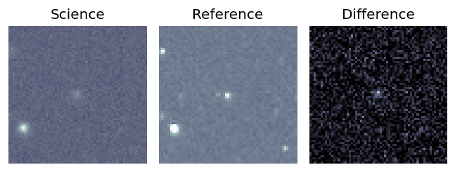
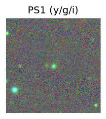
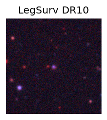
TESS: Sectors [ 8 34 44 45 46 61 72 88]
SDSS (<15 kpc):Found SDSS phot-z: z=0.71; peak abs mag = -22.59
NED host (10 arcsec):Found WISEA J090311.44+073816.6 (G, 1.2″); NED spec-z: z=0.6237 [zflag SLS]; peak abs mag = -22.25
PS1: 0 sources in 3 arcsec
LegacySurvey: 1 sources in 3 arcsec Closest: d = 0.56 arcsec, 172.6 deg (east of north) photoz=0.56 (68% bounds 0.46, 0.76), type=SER peak abs mag (ext. corrected) = -21.97 (68% bounds -21.47, -22.77)
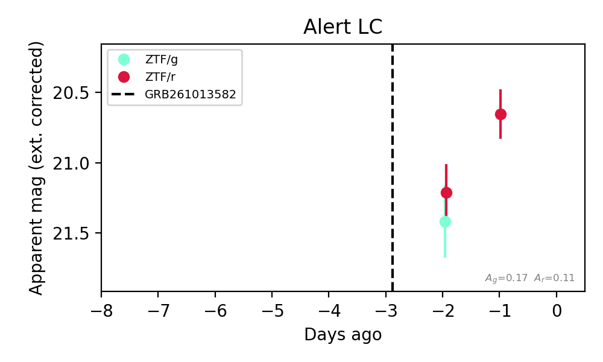
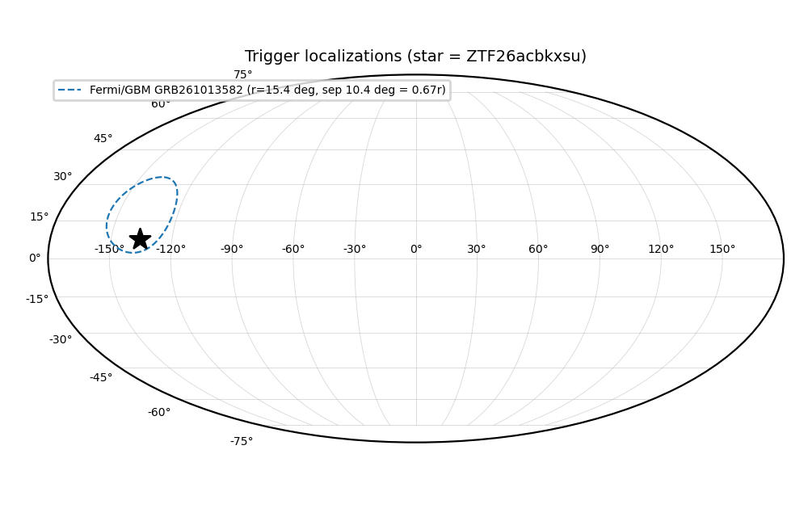
Extinction-corrected gr color:
From alerts: 0.21 +/- 0.33 mag
Consistent with synchrotron, g-r>0!
Rise Rate:
r: 0.59 mag/day
Fade Rate:
4. [ZTF] ZTF26acbkykq (Afterglow?FBOT?) [Back to Top] [Share] [Trigger Swift] [Fritz Alert] [Fritz Source] [Lasair]RA, Dec: 143.50792, 21.98702 9h34m1.90s, 21d59m13.25sGalactic (l, b): 208.23713, 45.09718 ext(g-r) = 0.026Coincident trigger: Fermi/GBM GRB261013582 (r=15.4 deg, sep 6.3 deg = 0.41 r; 0.91 d before first detection)Trigger time(s) marked on the light curve; error circles in the localization panel.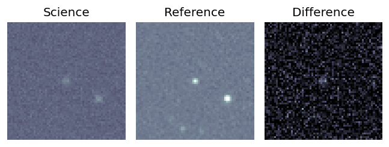
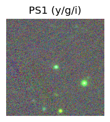
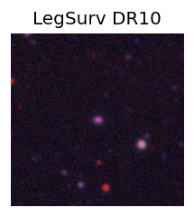
TESS: Sectors [21 45 46 48 72]
SDSS (<15 kpc):Found SDSS phot-z: z=0.54; peak abs mag = -21.42
PS1: 0 sources in 3 arcsec
LegacySurvey: 1 sources in 3 arcsec Closest: d = 0.40 arcsec, 236.1 deg (east of north) photoz=0.41 (68% bounds 0.36, 0.46), type=REX peak abs mag (ext. corrected) = -20.74 (68% bounds -20.38, -21.04)
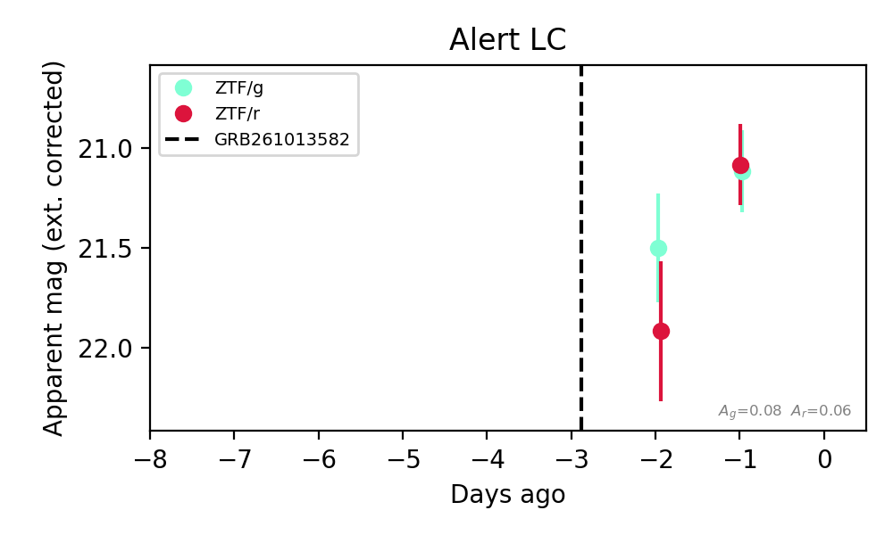
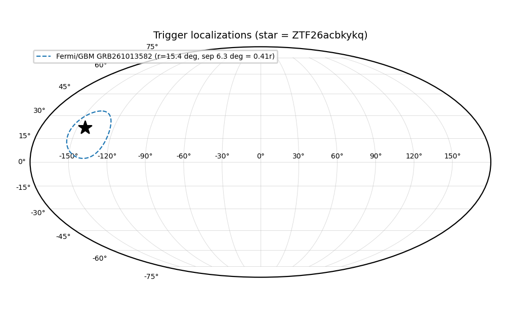
Extinction-corrected gr color:
From alerts: 0.03 +/- 0.29 mag
Consistent with synchrotron, g-r>0!
Rise Rate:
r: 0.88 mag/day
Fade Rate:
5. [ZTF] ZTF26acblfkg (FBOT?) [Back to Top] [Share] [Trigger Swift] [Fritz Alert] [Fritz Source] [Lasair]RA, Dec: 132.95154, 14.05525 8h51m48.37s, 14d 3m18.91sGalactic (l, b): 213.31702, 32.92984 WARNING: -3.42 deg from ecliptic plane ext(g-r) = 0.034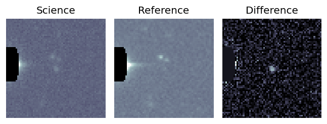
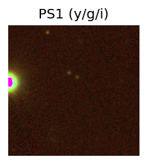
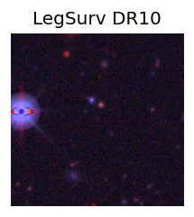
TESS: Sectors [44 45 46 72]
PS1: 0 sources in 3 arcsec
LegacySurvey: 1 sources in 3 arcsec Closest: d = 0.12 arcsec, 336.3 deg (east of north) photoz=1.19 (68% bounds 0.91, 1.46), type=REX peak abs mag (ext. corrected) = -23.83 (68% bounds -23.11, -24.38)
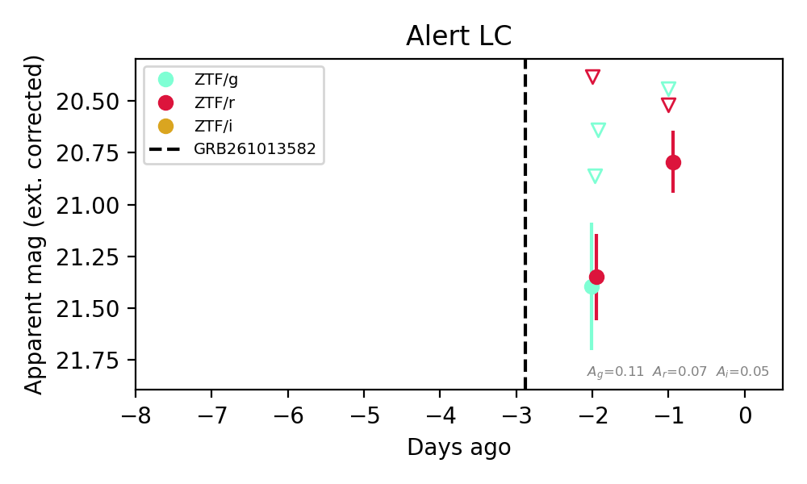
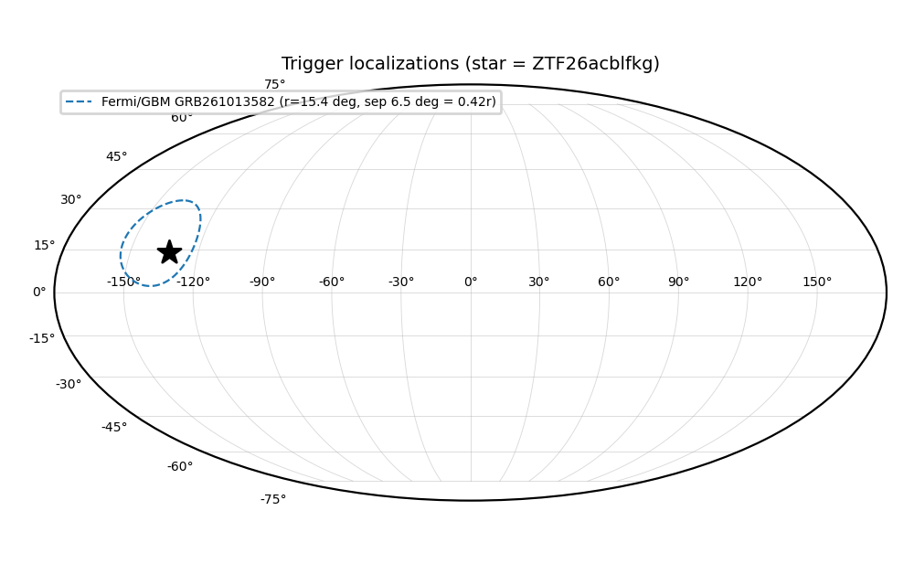
Extinction-corrected gr color:
From alerts: -0.35 +/- 99 mag
Extinction-corrected ri color:
From alerts: 0.54 +/- 99 mag
Rise Rate:
r: 0.55 mag/day
Fade Rate: